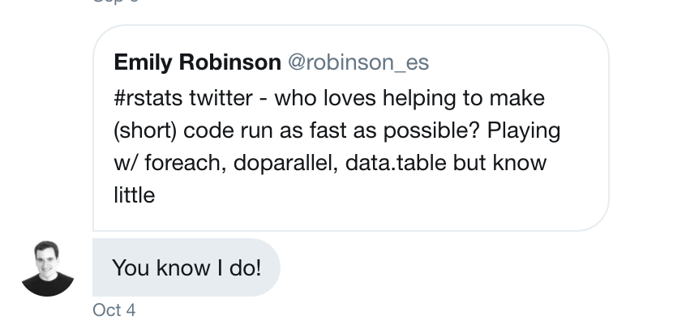
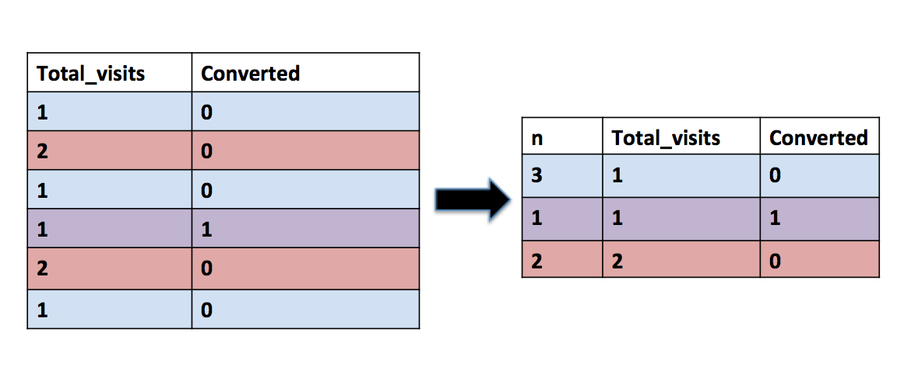

About two months ago I put a call out to Rstats twitter:
#rstats twitter - who loves helping to make (short) code run as fast as possible? Playing w/ foreach, doparallel, data.table but know little
— Emily Robinson (@robinson_es) October 4, 2017
I had a working, short script that took 3 1/2 minutes to run. While this may be fine if you only need to run it once, I needed to run it hundreds of time for simulations. My first attempt to do so ended about four hours after I started the code, with 400 simulations left to go, and I knew I needed to get some help.
This post documents the iterative process of improving the performance of the function, culminating in a runtime of .64 seconds for 10,000 iterations, a speed-up of more than 100,000x.
The problem
At Etsy I work a lot on our A/B Testing system. When assigning browsers randomly to experimental groups, we do so based on their browser id (cookie) or device id for apps. But when we analyze our data, we can use two different methods: visit level (chunks of behavior) and browser level. For more details, see my talk on A/B Testing (starting at 17:30).
While we offer both, we analysts encourage everyone to favor browser metrics over visit metrics. One reason is that visits can come from the same browser or person, violating the independence assumption of the statistical tests we use. In theory, this should inflate our false positive rate, but we’d never actually tested this with our own browsers, and a theoretical concept was not always convincing to our partner teams.
I therefore set out to simulate hundreds of null A/B Tests using our own data. I wanted to see if the percentage with p < .05, our false positive rate, was actually around 5%, or if it was inflated, as we expected.
Asking for help
I am very fortunate to have a data scientist brother who will jump in to help out even when not directly asked. A lot of the code improvements following come from him.

I’ve also gotten to know many other people in the R community through RLadies, conferences, and twitter, some of whom offered help as well. But even if you’re new to R and don’t know anyone, there are people who will jump in and help you too. RStudio recently launched a new community website where you can ask quesitons ranging from a specific issue that you need to debug to why you should use RMarkdown. There’s also a slack community, organized by Jesse Maegan, that brings people wanting to learn R together with mentors to work through Garrett Grolemund and Hadley Wickham’s R for Data Science book. Jesse has been writing a great series of blog posts reflecting on some lessons from each week, and she’ll also be doing another round.
Part of why I wrote this post is I believe those who are privileged–whether by having a data science job, getting to go to conferences, or having a formal education in programming or statistics–should try to share that through public work. I hope some of the lessons learned can help others optimize their code performance when needed. The first three are helpful for any language and the final two for R especially.
Lessons learned on performance
You may not need big data tools
In my tweet, I mentioned some packages I’d been trying, including foreach and doparallel, packages for parallel processing. Some folks replying also suggested sparklyr (which integrates spark and R) and Rcpp (which integrates R and C++). I thought I needed to use these because I was dealing with big data (for R) - 10+ million rows with some text columns!
But even if the data you start with is large, you may be able to make it smaller by eliminating extra columns or summarizing the data. In the next section, you’ll see how I compressed my data into 3 numeric columns and fewer than a thousand rows.
Try to do everything (grouping and counting) you can in SQL and eliminate unnecessary information
If you want to follow along, please run this R code to simulate a dataset (this is smaller than my dataset, so if you time the later code your times will not match mine):
initial_bis <- sprintf("%s%s%s", stringi::stri_rand_strings(800000, 5, '[A-Z]'),
stringi::stri_rand_strings(800000, 4, '[0-9]'),
stringi::stri_rand_strings(800000, 1, '[A-Z]'))
bi <- sample(initial_bis, size = 1000000, replace = TRUE)
c <- rbinom(1000000, 1, 0.2)
vi <- sprintf("%s%s%s", stringi::stri_rand_strings(1000000, 5, '[A-Z]'),
stringi::stri_rand_strings(1000000, 4, '[0-9]'),
stringi::stri_rand_strings(1000000, 1, '[A-Z]'))
bi_name <- "browser_id"
c_name <- "converted"
vi_name <- "visit_id"
search_visits <- data.frame(bi, c, vi)
names(search_visits) <- c(bi_name, c_name, vi_name)Here was my original code that:
- Pulled a table down from SQL that had all the visits that had a search in the previous X days, including whether they converted or not, and their browser id.
SELECT * FROM erobinson.simulate_fp_search- Randomly assigned on the browser level a label of 0 or 1.
library(data.table)
library(dplyr)
N <- nrow(distinct(search_visits, browser_id))
browsers <- search_visits %>%
distinct(browser_id) %>%
mutate(ab_variant = sample(c(0,1), N, replace = TRUE))
browsers <- as.data.table(browsers)
browsers <- setkey(browsers, browser_id)
dat_w_labels <- merge(search_visits, browsers, all.x=TRUE)
dat_w_labels <- dat_w_labels[, .(.N), by = .(ab_variant, converted)] %>%
arrange(ab_variant)- Counted up the number of total visits and converting visits for each label.
failures <- dat_w_labels %>%
filter(converted == 0) %>%
pull(N)
successes <- dat_w_labels %>%
filter(converted == 1) %>%
pull(N)- Ran a prop test comparing the two groups.
res <- prop.test(successes, failures + successes)The table I started with was over 10 million rows, and I was doing many operations:
- Getting the number of distinct browser ids
- Making a new table that had every browser id and their label
- Merging the new table with the original search visits table
- Grouping that new table by whether the visit converted or not and its label, counting the number of each type
- Extracting the number of conversions and non-conversions
- Doing a prop test
The last three steps are fast, but the first three are very long. This isn’t even including the initial 5 minutes (!) it takes to load the sql table in the first place. We’re able to refactor and make it faster by realizing a few things:
- We don’t need the big text columns visit id and browser id
- In SQL, we can group by browser id so each row has 1) the number of visits for a browser and 2) the number of visits that converted for that browser. With that, we’ll have a smaller table of only two numeric columns.
- We can then label each row with 0 or 1 randomly, assigning treatment on the browser level.
- Next, we sum up the total visits column and the converted column, grouping by label.
- Finally, we run a prop.test
Here’s what the sql new code looks like:
SELECT count(*) as total_visits, sum(converted) as converted
FROM erobinson.simulate_fp_search
GROUP BY browser_id Again, to follow along, here’s that sql code in R:
library(dplyr)
search_visits <- search_visits %>%
group_by(browser_id) %>%
mutate(total_visits = n(), converted = sum(converted)) %>%
select(total_visits, converted)I then created my simulation function and ran it 1000 times.
library(dplyr)
simulate_p_value_visits <- function() {
results <- search_visits %>%
# group_by here is really a mutate and group_by
group_by(label = sample(c(0,1), n(), replace = TRUE)) %>%
summarize(total_visits = sum(total_visits), converted = sum(converted))
prop.test(results$converted, results$total_visits)$p.value
}
simulate_p_values_visit_result <- replicate(1000, simulate_p_value_visits())
false_positive_rate <- sum(simulate_p_values_visit_result < .05)/
length(simulate_p_values_visit_result)*100 While switching the dplyr to data.table could probably speed it up even more, right now we’re down to about 14 minutes runtime for a 1000 iterations.
Eliminate redundancy
But we can then recognize that our table currently has a lot of redudancy: we have many browsers that have 1 visit and 0 conversions, 2 visits and 0 conversions, etc.
Therefore, we can make our code faster by: - Transforming our table so each row is a unique combination of visits & conversions, with a column that is the number of browsers with that combination. We can do this in SQL and output the table as “count of counts”.

with counts as (
SELECT count(*) as total_visits, sum(converted) as converted
FROM erobinson.simulate_fp_search
GROUP BY browser_id
)
SELECT count(*) as n, total_visits, converted
FROM counts
GROUP BY total_visits, convertedTo follow along, run the R code to create count_of_counts.
count_of_counts <- search_visits %>%
count(total_visits, converted)- Using the binomial distribution to simulate splitting browsers into A and B groups.
Because the bernoulli distribution is just a special case of the binomial distribution where n = 1, we’re doing the same process as before, but we do many fewer computations!
- As before, summarizing the number of visits and conversions in each group and apply our proportion test.
library(dplyr)
simulate_p_value <- function() {
# put about half (with binomial sampling) in each group
result <- count_of_counts %>%
mutate(A = rbinom(n(), n, .5),
B = n - A) %>%
summarize(total_A = sum(total_visits * A),
total_B = sum(total_visits * B),
converted_A = sum(converted * A),
converted_B = sum(converted * B))
prop.test(c(result$converted_A, result$converted_B),
c(result$total_A, result$total_B))$p.value
}
sim_pvals <- replicate(1000, simulate_p_value())
false_positive_rate <- sum(sim_pvals < .05)/length(sim_pvals)*100 Vectorize
While the previous code is pretty fast, we can get it even faster by vectorizing the prop test. If you’re not familiar with vectorization in R and why it’s faster, check out Noam Ross’s excellent blog post.
Here is the new code using a vectorized proportion test (courtsey of David Robinson’s splittestr package).
library(devtools)
install_github("dgrtwo/splittestr")
library(splittestr)
library(dplyr)
library(tidyr)
simulated_pvals <- count_of_counts %>%
crossing(trial = 1:1000) %>%
mutate(A = rbinom(n(), n, .5), B = n - A) %>%
group_by(trial) %>%
summarize(total_A = sum(total_visits * A),
total_B = sum(total_visits * B),
converted_A = sum(converted * A),
converted_B = sum(converted * B)) %>%
mutate(pvalue = vectorized_prop_test(converted_A, total_A - converted_A,
converted_B, total_B - converted_B)$p.value)
false_positive_rate <- sum(simulated_pvals$pvalue < .05)/
length(simulated_pvals$pvalue)*100 Crossing is the tidyr version of mutate: it creates a tibble from all the combinations of the supplied vectors. In this case, that means we’ll have a 1000x the number of rows in “count of counts.” For each trial, we’ll simulate putting half of the browsers in A and half in B. Then we can get the total number of visits and converted visits for each trial and use our vectorized prop test to create a new variable that is the p-value.
Use matrix operations
But wait, there’s more! The issue with the previous version is memory: we’re creating that intermediate product that has hundreds of thousands of rows. Instead, we can use matrix operations, which are faster and less memory-taxing than R. We don’t get to use tidyverse code, but sometimes sacrifices must be made.
Here, we first create two matrixes, A and B. Each column represents one simulation, and each row a unique combination of visits and conversion (e.g. one row is for browsers with 1 visit and 0 conversions, another for 2 visits and 1 conversion, etc). We’ve used the binomial distribution again to simulate splitting n, the number of browsers with a certain combination of visits and conversions, into A and B.
A <- replicate(1000, rbinom(nrow(count_of_counts), count_of_counts$n, .5))
B <- count_of_counts$n - AWe create four vectors of length 1000, one entry for each simulation. Two are for the total number of visits in A or B and two are for the the number of converted visits in A or B. For example, if the first entry in A and B represents the number of browsers with 5 visits and 1 conversions in A and B, respectively, we just multiply each of those by 5 to get the number of visits and by 1 to get the number of conversions. So if it was 2 in A and 3 in B, that means A had 10 visits and 2 conversion while B had 15 visits and 3 conversions. We do this for every row and then add up the column to get the total number of visits and total number of conversions for that simulation in A and in B. This operation is repeated for all 1000 columns (simulations).
total_A <- colSums(A * count_of_counts$total)
total_B <- colSums(B * count_of_counts$total)
converted_A <- colSums(A * count_of_counts$converted)
converted_B <- colSums(B * count_of_counts$converted)Our last step is to use the vectorized prop test to get a 1000 p-values and then calculate what percentage of them are less than .05.
library(devtools)
install_github("dgrtwo/splittestr")
library(splittestr)
pvals <- vectorized_prop_test(converted_A, total_A - converted_A,
converted_B, total_B - converted_B)
false_positive_rate <- sum(pvals < .05)/length(pvals)*100 Final Tally
Here’s the final comparison of performance (calculated using the great tictoc package):
| Attempt | SQL table runtime | 1 iteration runtime | 1000 iterations runtime | 10000 iterations runtime |
|---|---|---|---|---|
| Original | 5+ minutes | 215 seconds | ||
| Second Version | 23 seconds | .5 seconds | 839 seconds | |
| Summarized Version | .7 seconds | .03 seconds | 9.2 seconds | |
| Vectorized Version | .7 seconds | .39 seconds | 7.9 seconds | |
| Matrix Version | .7 seconds | .11 seconds | .64 seconds |
Conclusion
One rule of thumb for maximizing #rstats performance is that the way you’d do something once is rarely the best way to do it 1000X
— David Robinson (@drob) October 5, 2017
At RStudio::Conf 2017, Hadley Wickham discussed how the bottleneck in writing code is usually thinking speed, not computational speed. Therefore, he advised that you shouldn’t prematurely worry about optimizing for performance but rather about making sure your code is clear. In this case, though, the point was to run the same code hundreds of times, so I needed to start worrying about performance. Through the process, I learned a lot about how R works “under the hood” and how to conceptualize problems a different way.
Next time, I’ll be returning soon to the topic of A/B Testing, sharing what I’ve learned from reading industry papers.